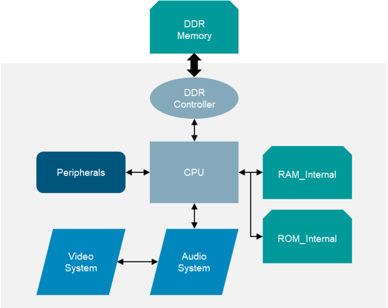
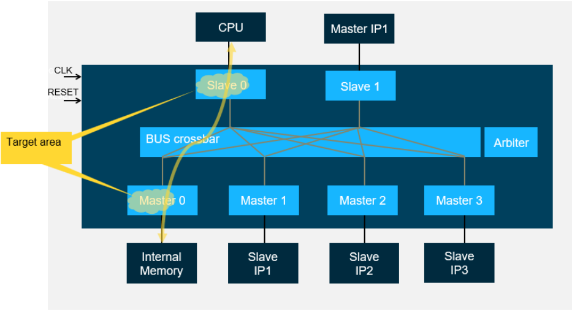
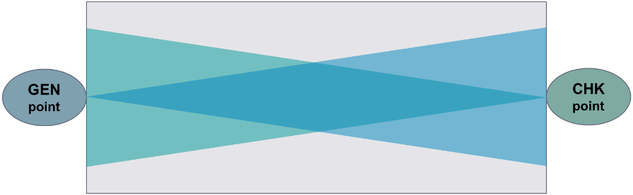
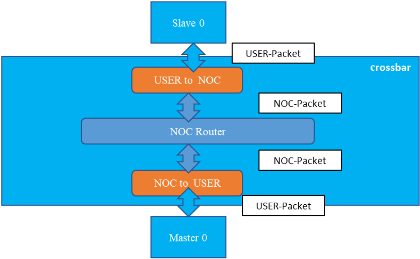
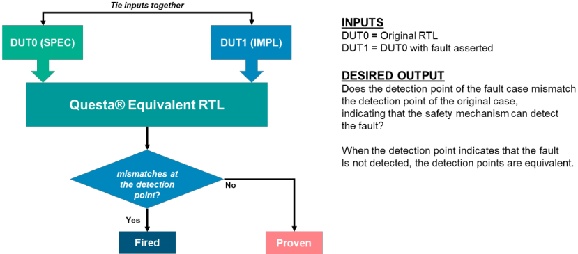

面向功能安全的带软件安全机制（Software Safety Mechanisms）SoC 的静态结构分析与形式验证
论文针对大型 SoC 故障 campaign 收敛难、软件安全机制（Software SM/STL）诊断覆盖率难以在早期证明的问题，提出 gap analysis、静态结构分析与形式验证的三步法。先用 gap analysis 定位既有硬件 SM 未覆盖的 AXI 互连总线矩阵等灰色区域；再用 Siemens SafetyScope 的 RFM（River Flow Mode）数据通路分析（从 GEN 到 CHK 点）确认软件 SM 无结构性覆盖限制；最后用 Questa Equivalent RTL 以正常 RTL 为 SPEC、故障 RTL 为 IMPL 做形式等价检查，证明 stuck-at-0/1 永久故障能否传播到 AXI 端口检测点。在 Samsung 汽车项目上，工程判断将 22.71% 的 Not Detected 故障判为 safe，软件 SM（RAW+STL）经形式验证确认覆盖 4.41% 的故障，最终对 NOC in Safety Island 达成 93.62% 的 diagnostic coverage，满足 ASIL-B 目标。该方法无需仿真激励与软件栈就绪，可在设计早期预验证安全机制有效性。
大型 SoC 的故障 campaign 繁琐且难以收敛：传统动态 fault simulation 完成后仍存在大量 Not Detected（Residual、No Deviation、Not Injected）故障需要工程判断；同时软件安全机制（Software SM/STL）的诊断覆盖率通常要等软件栈就绪后通过仿真才能验证，难以在设计早期证明。论文要解决的是：如何在无需仿真激励、软件栈未就绪的早期阶段识别硬件 SM 的覆盖缺口，并证明软件 SM 的 fault detectability，从而达成 ASIL-B 的 DC 目标。
三步法：(1) Gap analysis：对比目标故障空间与设计，定位既有硬件 SM 未覆盖的区域（如 AXI interconnect bus matrix）；(2) 静态结构分析：用 Siemens SafetyScope 的 River Flow Mode（RFM）做数据通路覆盖分析，从数据生成点（GEN）到检查点（CHK）分配 SM 覆盖，提取可被软件 SM 保护的全部数据通路节点，缩减后续证明空间；(3) 形式验证：用 Questa Equivalent RTL 将正常 RTL 编译为 SPEC、故障 RTL 编译为 IMPL，通过形式等价检查（等效于在指定点注入故障）证明 stuck-at-0/1 永久故障能否沿 AXI channel 传播到检测点（如 Master 端口输出，以 VALID/READY 握手作为 detect condition），结果分为 Fired/Proven/Inconclusive，并施加约束改善运行时间。整体流程将工程判断、结构分析与形式验证结合，用于收敛 Residual/No Deviation 类故障并论证软件 SM 覆盖。
传统 fault campaign 基于 6000 个统计随机采样的故障，在完整配置安全机制后仍有 33.50% 的 Not Detected 故障需工程判断
工程判断得出 6.76% Residual 与 15.95% No Deviation 类 safe 判定，合计 22.71% 判为 safe；仍有约 11% 故障保守地不安全，达成 ASIL-B（MOE 1.06%）还需约 3% 额外覆盖
gap analysis 发现硬件 SM 无法覆盖的灰色区域占总故障 4.88%；软件 SM（RAW+STL）提出覆盖其中 4.47%（位于 flash 存储区域的故障路径被排除）
经 SafetyScope 结构分析与 Questa Equivalent RTL 形式验证，确认 4.41% 的故障被软件 SM 覆盖
最终对 Samsung 设计的 NOC in Safety Island 达成 93.62% 的 diagnostic coverage
区别于依赖仿真激励的传统 fault simulation，论文用静态结构分析（SafetyScope RFM）先缩减证明范围，再用形式等价检查（Questa Equivalent RTL 的 SPEC/IMPL 配置）等效于在指定点注入故障，从而在无激励、软件栈未就绪的早期证明软件 SM 的 DC；并将工程判断、结构分析与形式验证整合为闭环流程，专门用于收敛 Residual/No Deviation/Not Injected 等难分类故障，以及论证 RAW 类 STL 软件安全机制的覆盖有效性。
相关度级别：high
命中能力域：2.5 功能安全与安全机制 | 2.6 Fault simulation/Z01X/TFMEA
理由：论文核心是 ISO 26262/ASIL 背景下安全机制诊断覆盖率（DC）的证明与收敛，直接命中 2.5 功能安全域（安全机制设计与验证、safety verification、DC 论证）；其故障分类体系（Residual/No Deviation/Not Injected）、fault campaign 组织方式与 detectability 证明方法与团队 2.6 域的 fault injection/fault grading/detectability 分析及 TFMEA/FMEDA 论证高度相关：团队用功能 pattern 做 fault grading 后遗留的 Not Detected 故障收敛、以及软件 SM/STL 覆盖论证，可直接借鉴本文的结构分析+形式等价故障注入路线作为 fault simulation 之外的补充证据链。与 2.1 仅共享 stuck-at 故障模型与 fault classification 术语，但论文流程非 ATPG/门级仿真，故不列入。
建议动作：深入精读并做内部分享
Hyunsun Ahn，三星电子有限公司，韩国（hyunsun.ahn@samsung.com）Euisang Yoon，Siemens EDA，韩国（euisang.yoon@siemens.com）Namyul Cho，Siemens EDA，韩国（namyul.cho@siemens.com）Arun Gogineni，Siemens EDA，美国（arun.gogineni@siemens.com）Ann Keffer，Siemens EDA，美国（ann.keffer@siemens.com）Sungjin Park，Siemens EDA，韩国（sungjinpark@siemens.com）Sungyun Yoo，Siemens EDA，韩国（sungyun.yoo@siemens.com）Bumju Kim，三星电子有限公司，韩国（bumju.kim@samsunmg.com）Junhyuk Park，三星电子有限公司，韩国（jh23.park@samsung.com）Youngsik Kim，三星电子有限公司，韩国（ys31.kim@samsung.com）Seonil Brian Choi，三星电子有限公司，韩国（seonilb.choi@samsung.com）
摘要：大型片上系统（SoC）设计中的故障注入活动十分复杂，且对于确保软件安全机制的可靠性至关重要。本文提出了一种集成方法，利用静态结构分析和形式验证技术在设计流程早期检测并解决故障。通过集成这些方法，我们旨在提升诊断覆盖率（DC），并确保符合汽车安全完整性等级（ASIL）要求。我们的方法涉及一个多步骤流程，包括差距分析、静态结构分析和形式验证，以识别并缓解潜在故障。针对三星某汽车项目的案例研究证明了该方法的有效性，显示出故障检测与解决方面的改进。这些结果凸显了将静态方法与动态方法相结合的重要性，以实现全面的DC，并确保汽车系统达到最高的安全性与可靠性标准。
在大型片上系统（SoC）设计中开展故障测试活动是一项繁琐且充满挑战的过程。尽早检测半导体电路中的故障，对于确保软件安全机制（SMs）的可靠性和有效性至关重要。本文阐述了在IC设计中使用软件安全机制和软件任务库以提高诊断覆盖率（DC）的益处。我们将讨论软件测试库（STLs）如何在功能安全中用于确保软件安全机制的正确性，以及如何应用一种综合方法，通过创新的结构分析和形式验证技术，结合静态与动态故障分析来证明诊断覆盖率。本文旨在展示该方法如何改进故障的检测与解决，并提升SoC设计的整体安全性与可靠性。我们的方法不仅能够在早期阶段识别故障，还为故障检测与解决流程的持续改进提供了一个框架。
采用软件安全机制（SM）来保护面向汽车市场的设计，正日益成为 IC/SoC 的一种流行方法，因为它有助于以结构化且有效的方式达到覆盖率指标。软件 SM 具有许多优点，例如：
软件安全机制的典型组成部分包括软件任务库和自测试库。软件任务库确保对存储器区域的安全访问，促进系统各部分之间可靠的数据交换，并监控系统健康状况。
软件测试库（Software Test libraries，STL）用于在系统性测试过程中对软件安全机制进行测试、验证并确保其正确性。STL 之所以有利于测试软件安全机制，是因为它们具有以下特点：
在本文中，我们将上述所有内容统称为 STL，它们被用作面向功能安全的软件安全机制。
软件安全机制（SM）可以通过多种方式执行。一些常用的方法包括：

如上所述，实现有效的软件安全机制（SM）可以显著有助于满足 ASIL 指标的目标要求。如果能够在实现的早期阶段评估这些软件 SM 所提供的诊断覆盖率（DC），便可以预先验证这些机制的有效性。为此，可以采用结构分析和形式验证技术。
结构分析侧重于识别能够缩小证明范围的设计模式和协议。借助形式验证，我们无需执行仿真，也无需依赖软件栈的就绪状态，即可评估失效状态。该技术使得在完整软件栈开发完成之前，就能对软件安全机制进行早期的概念验证。
该过程包含三个关键步骤：
通过审查目标故障空间和设计，我们可以识别出能够通过软件 SM 实现覆盖率提升的区域，而不是仅仅依赖已有的硬件 SM。图 2 展示了一个全矩阵互连结构，其中每个从端口（slave port）可以根据地址范围访问所有主端口（master port）。在 Master IP1 和 Slave IP1 中实现的已有硬件 SM 并未覆盖整个总线矩阵。这些未覆盖的区域正是需要实现软件安全机制以实现覆盖率提升的地方。

一旦通过差距分析（gap analysis）确定了覆盖率提升的目标区域，即可使用静态结构分析来验证该目标区域的连接性。西门子EDA（Siemens EDA）的 SafetyScope™ 可用于此类静态结构分析。SafetyScope 支持多种结构分析模式，包括连接性分析和数据通路分析。我们将其称为 SafetyScope 的河流流动模式（River Flow Mode, RFM）分析。
RFM 分析是一种数据通路覆盖率分析，它将安全机制覆盖率分配至整个数据通路，从数据生成的生成（GEN）点，到数据被消费的检查（CHK）点。

In data path analysis, we do:
The logic cone that remains after this analysis will be considered part of the data path.
图2所示的目标区域是数据路径的一部分。如果我们放大观察交叉开关（crossbar）的内部，可以看到如图4所示的数据包流：

我们使用 SafetyScope RFM 提取所有可通过软件安全机制中的数据路径保护加以覆盖的数据路径节点。随后将该列表提供给形式验证引擎，以证明其覆盖率。
西门子EDA的 Questa® Equivalent RTL 被用作形式验证解决方案，用于证明固定0（stuck-at-0）或固定1（stuck-at-1）永久故障是否可检测。其基本思想是通过形式等价性检查来比较正常RTL与故障RTL。这一过程与传统故障仿真流程中在特定点进行故障注入的方式非常相似。如图5所示，正常RTL被编译为名为SPEC的设计单元，而故障RTL被编译为名为IMPL的设计单元。要开展此项工作，所需的先决材料包括该模块的RTL、总线互连的地址映射、设计架构、目标故障列表，以及形式验证工具 Questa® Equivalent RTL。
尽管市场上还有其他多种静态验证和形式验证解决方案也可能适用于该方法，但我们在本次实践中选择了西门子EDA的 SafetyScope 和 Questa® Equivalent RTL，以便与安全分析、静态分析和形式验证实现无缝集成。
主要流程如下：
形式验证结果以三种方式呈现：

该方法应用于图2中的AXI互连总线矩阵，即经结构分析缩减后的设计范围。
如果多个故障点的位置不同，检测点（Questa® Equivalent RTL 的映射点）也会相应变化。在本实验中，故障通过AXI通道传播到端点，导致AXI端口输出出现差异，这些输出被视为检测点。如果 Questa® Equivalent RTL 捕捉到该偏差，结果将被报告为 'Fired'。
| Target Area | Channel | Detection Point (IO) | Condition |
|---|---|---|---|
| Slave 0 | Write Data | Master 0 | Master0.WREADY&&Master0.WVALID |
| Slave 0 | Read Data | Slave 0 | Slave0.RREADY&&Slave0.RVALID |
| Slave 0 | Write Address | Master 0 | Master0.AWREADY&&Master0.AWVALID |
| Slave 0 | Read Address | Master 0 | Master0.ARREADY&&Master0.ARVALID |
| Master 0 | Write Data | Master 0 | Master0.WREADY&&Master0.WVALID |
| Master 0 | Read Data | Slave 0 | Slave0.RREADY&&Slave0.RVALID |
| Master 0 | Write Address | Master 0 | Master0.AWREADY&&Master0.AWVALID |
| Master 0 | Read Address | Master 0 | Master0.ARREADY&&Master0.ARVALID |
| Target Area | Channel | Detection Point (IO) | Condition |
如表1所示，如果故障点是 Slave 0 接口区域中的 WDATA，则根据地址映射的规定，检测点应设置为 Master 0。AXI总线采用握手方式通过 VALID/READY 信号进行通信，因此应在检测点将 VALID/READY 信号作为检测条件给出。除了表中列出的数据和地址信号外，多种类型的AXI总线边带信号也可以按照与数据信号相同的方式进行分析。
在实际应用中，会使用多个总线互连器。在典型的SoC设计中，存在大量的总线互连，且一个IP的主端可以访问多个从IP。这使得CPU的软件安全机制能够证明诊断覆盖率（DC），并且形式验证工具可以检测出通往连接某些从IP的端点的故障传播路径。然而，需要施加适当的约束，形式验证工具才能报告准确的结果并缩短运行时间。
以下是我们在本实验中使用约束的方式：
这种形式验证方法存在预期中的局限性。首先，考虑 ADDRESS 路径中的故障时，沿 ADDRESS 路径传播的故障无法到达相应的端口；因此，ADDRESS 的结果不能为 'fired'（已触发），而只能是 'proven'（已证明）或 'inconclusive'（不确定）。其次，如果向 VALID/READY 等握手信号中注入故障，整个事务的传递可能与原始情况不同；因此，即使形式验证结果报告为 'fired'，故障路径也可能无法被检测到。
尽管存在这些局限性，该方法的应用仍有潜力超越本文所讨论的实际实验而进一步扩展。虽然本实验仅针对永久性故障，但可以很容易地扩展到对瞬态故障注入的分析。瞬态故障可以通过施加适当的时序假设（sequential assumptions）作为约束条件来模拟，而无需将故障点驱动为 0 或 1。
上述方法已在三星（Samsung）得到应用，用于改善动态故障仿真中的覆盖率缺口，其目标是使某汽车项目满足汽车安全完整性等级（ASIL）的要求。
在三星设计部门，采用传统故障仿真技术对总计6000个经统计随机采样的故障进行了处理。在DVCon US 2024上发表的论文《我的故障活动是否能为ISO 26262认证提供准确结果？》[4]介绍了我们如何在该设计上规划并验证故障活动。此次故障活动的结果详见表2，其来自配置了完整安全机制的最新一次故障活动，相较于[4]中发表的结果已更新至最新。
| Categories | % Of faults | |
|---|---|---|
| 1 | Alarm Detected | 66.50 % |
| 2 | Residual | 11.33 % |
| 3 | No Deviation | 13.57 % |
| 4 | Not Injected | 8.60 % |
| | Categories | % Of faults |
本文的实践实验针对的是这样一个过程：通过对未检测（Not Detected）类别（包括残余（Residual）、无偏差（No Deviation）和未注入（Not Injected））故障的分析和附加实验，来满足 ASIL-B 的诊断覆盖率（DC）目标。传统上，无偏差和未注入类别中的故障被视为安全。然而，我们采取保守的方法，对未检测类别故障中的 33.50% 进行了工程分析和判定。
通过设计人员和验证工程师的判定工作，我们对残余类别中 6.76% 的故障以及无偏差类别中 15.95% 的故障获得了安全判定。大多数情况是通过设计人员确认而判定为安全的，因为这些故障由于缺乏验证场景或出现非预期场景而经由未使用的路径传播，而这些场景在实际用例中并不会发生。
如表3所示，尽管付出了大量努力，在将 22.71% 的故障判定为安全之后，总故障中仍有约 11% 被保守地视为不安全。为了达到 ASIL-B 目标，考虑到 1.06% 的误差余量（Margin of Error, MOE），还需要额外约 3% 的工作量。
| Detected | Residual | No Deviation | |
|---|---|---|---|
| Fault campaign result | 66.5% | 11.33% | 22.17% |
| Judgement result | Safe: 6.77% | Safe: 15.95% | |
| Judgement result | Not Safe: 4.57% | Not Safe: 6.22% |
| | Detected | Residual | No Deviation |
通过对不安全（Not Safe）故障的差距分析，我们识别出一个硬件安全机制（SM）无法覆盖的灰色区域，占总数的 4.88%。为了改善这 4.88% 并达到 ASIL-B 所要求的剩余 3% 覆盖率，我们与软件工程团队合作应用软件 SM。该软件 SM 由软件工程师在硬件设计人员的指导下开发并实现。本实验中特别考虑了结合 STL 的写后读（Read after Write, RAW）安全机制。在与软件团队的讨论中，由于部分故障路径位于闪存区域而无法应用 RAW SM，我们将其从目标应用中排除。因此，在总共 4.88% 的未覆盖故障中，我们提出通过软件 SM 覆盖 4.47%。
为了证明这些故障的覆盖情况，我们选择静态分析和形式验证，而非难以准备所需输入激励的传统故障仿真。首先，我们通过结构分析验证了 RAW SM 在覆盖特定目标故障方面不存在结构性限制。随后，我们进行了形式验证，以确认实际有效的 RAW 操作能够检测到这些故障。按照前文所述的流程，我们使用 SafetyScope 和 Questa ® Equivalent RTL 执行了结构分析和形式验证，并确认 4.41% 的故障已被软件 SM 覆盖。
最终，如表4所示，对于 Samsung 设计中安全岛（Safety Island）内的 NOC，我们可以声称达到 93.62% 的覆盖率。
| BUS Logic.NOC in Safety.NOC in Safety.Island 65.87% | Result 1(from [4]): Fault simulation with partially configured hardware SMs Detected (%).Total 65.87%.Fault Simulation.Fault Simulation | Result 2: Fault simulation with fully configured hardware SMs Detected (%).Total 66.50%.. | Result 3: Fault simulation + Judgement results Detected (%).Total 89.21%.Fault Simulation 66.50%.Fault Simulation 66.50% Judgment | Result 4: Fault simulation + Judgement result + static and formal analysis for software SMs Detected (%).Total 93.62%.Fault Simulation.Judgement | Result 4: Fault simulation + Judgement result + static and formal analysis for software SMs Detected (%).Total 93.62%.66.50%.22.71% |
|---|---|---|---|---|---|
| NOC in Safety | Fault Simulation | Fault Simulation 66.50% Judgment | Software SM | 4.41% |
| BUS Logic.NOC in Safety.NOC in Safety.Island 65.87% | Result 1(from [4]): Fault simulation with partially configured hardware SMs Detected (%).Total 65.87%.Fault Simulation.Fault Simulation | Result 2: Fault simulation with fully configured hardware SMs Detected (%).Total 66.50%.. | Result 3: Fault simulation + Judgement results Detected (%).Total 89.21%.Fault Simulation 66.50%.Fault Simulation 66.50% Judgment | Result 4: Fault simulation + Judgement result + static and formal analysis for software SMs Detected (%).Total 93.62%.Fault Simulation.Judgement | Result 4: Fault simulation + Judgement result + static and formal analysis for software SMs Detected (%).Total 93.62%.66.50%.22.71% |
本文所述的方法有助于在早期对软件安全机制的覆盖率进行分析。该方法明确聚焦于数据通路保护。尽管这一方法可以扩展到其他用例，例如控制通路保护或带有适当观察点的软件安全机制，但我们将形式验证限制在特定的时序深度，而不是涵盖整个设计层次。
该方法的后续工作包括：
· 创建必须借助 SafetyScope RFM 方法加以处理的设计锥，以限制需要形式验证关注的设计规模。
· 在设计划分器（SafetyScope）与形式验证引擎之间建立无缝通信，使形式验证所需的设置能够自动生成。
· 探索基于输入激励的动态形式分析的可行性，以缩小目标设计空间。
所提出的方法适用于任何需要合适向量来加以证明的安全机制（SM）。对于 ASIL D 等级，如果采用冗余复制方式来达到该 ASIL 等级，其他方法能够更快地完成证明。然而，如果使用软件 SM 来达成部分覆盖率目标，该方法将有助于借助早期度量指标更快地完成软件文档的编写收尾，并识别出使用软件 SM 模型未能覆盖的区域。对于其他 ASIL 等级，该方法可用于证明硬件与软件安全机制的有效性。
结构分析与形式验证能够在无需传统故障仿真流程的情况下提升故障检测分辨率。在本文中，我们提出了一种包含多步骤流程的方法学，其中包括差距分析、静态结构分析和形式验证，以便在设计流程早期识别并证明故障分辨率。针对三星汽车电子设计的案例研究凸显了该方法的有效性，表明我们通过结合静态与动态分析方法，针对目标 ASIL 等级实现了全面的诊断覆盖率（DC）。通过与 Siemens EDA 的合作，我们致力于将该方法的流程自动化并集成到其功能安全解决方案中，从而显著提升汽车系统的整体安全性与可靠性。所有静态与动态分析（包括工程判断）都应在单一数据库中加以管理并完全自动化，以报告最终度量指标。通过持续改进我们的方法，我们努力走在新兴挑战的前面，确保 SoC 设计达到最高的安全性与可靠性标准。